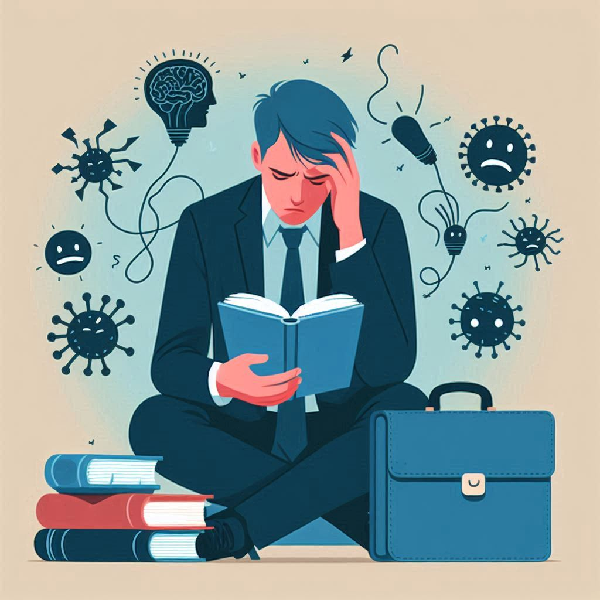

불안할 땐 뇌과학
목차
작가
엘리자베스 칼
출판일
2023년 8월 21일
감상평에 대한 AI그림
의지대로 조절이 되지 않는 불안과 우울. 우울한 감정을 다스릴 수 있다 착각하는 경우가 많지만 사실 우리의 통제 밖인 뇌에서 그 문제점을 파악하고 어떻게 불안을 점점 인식하고 통제할 수 있도록 유도하는지 그 상세한 과정을 담은 책이다. '피질 기반' 불안이 아닌 '편도체 기반' 불안은 우리가 이유를 댈 수는 없지만 무의식적으로 불안을 야기한다. 명시적으로 불안의 발생 매커니즘과 해결 방안의 과정을 뇌과학적인 방법으로 서술하여 매우 실용적이라는 생각이 들었고 우리가 그 과정을 자연스레 따라가도록 유도하여 불안을 통제하는데 도움이 많이 되었다.

감상평에 대한 AI평가
1. 불안과 우울 : 의지대로 조절되지 않는 불안과 우울을 겪고 있으며, 이러한 감정이 우리의 통제 밖에 있다고 느끼고 있습니다. 이는 불안과 우울의 원인에 대해 깊이 고민하고 있음을 나타냅니다.
2. 실용적인 접근 : 책의 내용을 매우 실용적이라고 평가하고 있습니다. 이는 불안과 우울을 해결하기 위한 구체적인 과정과 방법이 제시된 것에 만족하고 있음을 나타냅니다.
3. 과학적 이해 : '피질 기반' 불안과 '편도체 기반' 불안을 구분하며, 불안의 발생 매커니즘에 대해 과학적으로 접근하고 있습니다. 이는 뇌과학에 대한 관심과 이해가 깊음을 반영합니다.
4. 자연스러운 유도 : 불안을 인식하고 통제하는 과정을 자연스럽게 따라갈 수 있도록 유도된다는 점에서 만족감을 느끼고 있습니다. 이는 저자가 제시한 방법이 실질적인 도움을 준다고 생각하고 있음을 나타냅니다.
5. 긍정적인 결과 : 불안을 통제하는 데 큰 도움을 받았다는 점에서, 책의 내용이 실제로 유익하다고 평가하고 있습니다. 이는 긍정적인 변화를 경험했음을 의미합니다.
작성자는 불안과 우울의 과학적 원인과 해결 방법에 대해 깊은 관심을 가지고 있으며, 실질적인 도움을 받을 수 있는 책을 통해 긍정적인 변화를 경험하고 있습니다. 이러한 경험은 앞으로 불안과 우울을 더 잘 관리하는 데 큰 도움이 될 것입니다. 😊